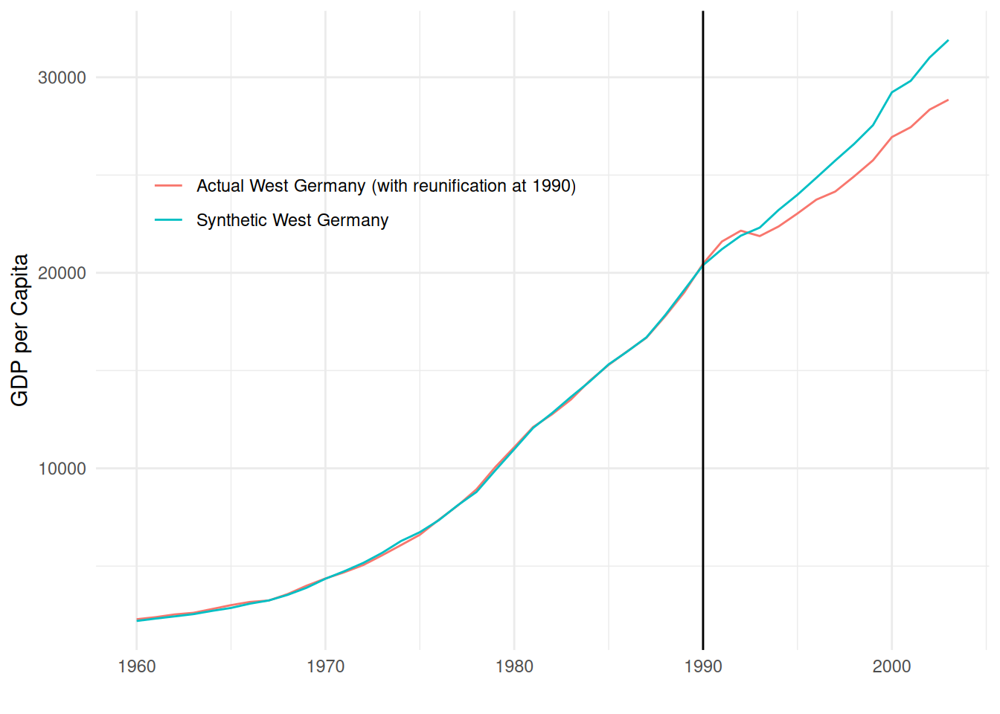
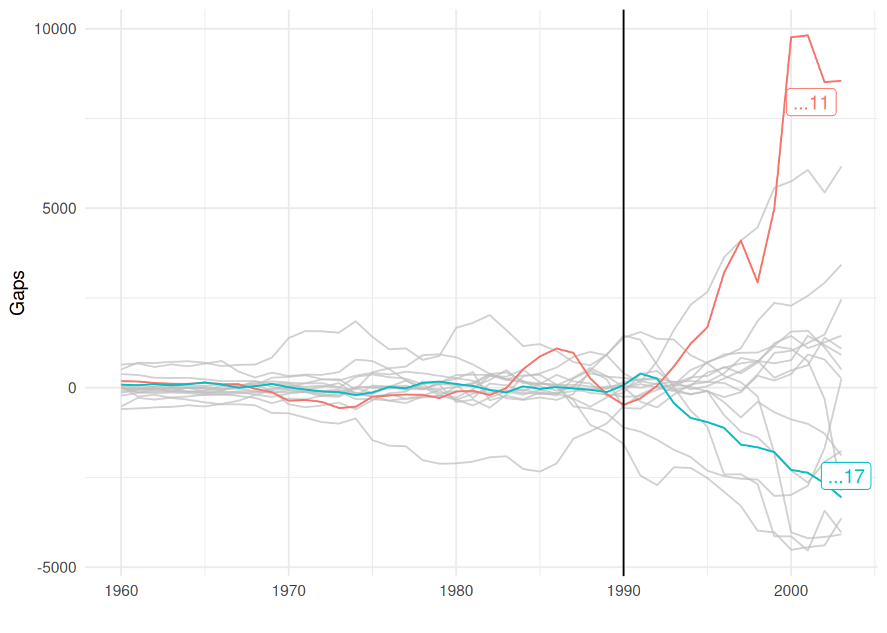
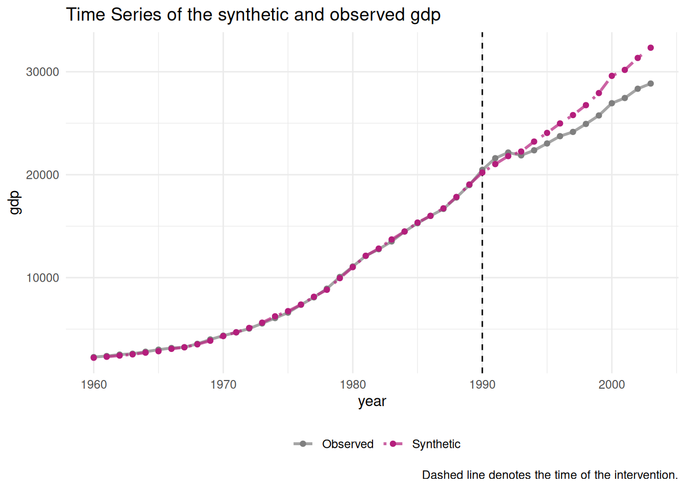

An introduction to the synthetic control method in R
Statistics
R
Author
Celâl Güney
Published
October 7, 2025
Comparative politics and comparative political economy rely extensively on comparative case studies. One can assuredly say that the beginnings of comparative politics were mostly based on qualitative research based on a close examination and comparison of a small sample of countries. This includes the founding works of Montesquieu De l’esprit des lois (1748) and almost a century later of Tocqueville De la démocratie en Amérique (1835). Despite the increasing use of statistics in social sciences during the 19th and 20th centuries, the most notable comparative case studies were still mostly based on a qualitative approach. One can refer for instance to Katzenstein (1985) and Shonfield (1974) who used statistics but in a descriptive way. Quantitative methods will nonetheless become predominant in comparative case studies during the 90s-2000s and the use of factor analysis to identify different types of socio-economic and political systems. Lijphart (2012) famously tried to find quantitative support for his typology of democracies; Esping-Andersen (1990) for his different types of welfare regimes and Amable (2003) for his typology of capitalisms.
But once different socio-economic and political regimes are identified at one point in time, the question of change remains and more specifically the question of how a given policy or reform would impact these regimes. To tackle the question of change, researchers became increasingly interested in policy impact evaluation through causal analysis, which includes instrumental variable regression, regression discontinuity design and difference in differences (DiD). The latter is famous and widely used for its simplicity because it can be used in a wide variety of case studies involving cross-section and panel data. However, one problem with DiD is its parallel trend assumption which is difficult to hold in practice. Comparative case studies using a DiD approach very often try to find very similar cases in terms of trends and characteristics to hold this assumption. But what if, instead of comparing our case of interest with one of several quasi-counterfactuals, one could construct an artificial counterfactual by synthetizing core information from many other cases ?
This is the purpose of the synthetic control method which, according to its main creator Alberto Abadie, is a useful method to complement and facilitate qualitative analysis in comparative case studies (Abadie, Diamond, and Hainmueller 2015). Another interesting property of this method is that it is designed to study the very specific case in which a policy, reform of any “intervention” happens in the case of interest but not in the comparison units.
The core ideas of the synthetic control method are the following1:
We face the fundamental problem of causal inference in the context of an intervention/event/treatment which happened to a single or small number of units at an aggregate level (countries, regions or cities), the causal effect that we want to estimate is:
\[
\tau_{ij} = Y_{1t}^I - Y_{1t}^N
\tag{1}\]
With \(Y_{1t}^I\) the outcome of interest for the treated unit \(1\) when treated at time t and \(Y_{1t}^N\) the outcome if it would not have been treated. Since \(Y_{1t}^N\) is not observed, the synthetic control method proposes to construct a synthetic index from \(j = 2, 3,..., J+1\) units which have not been treated (the “donor pool”) with a set of predictors of \(Y_{it}\), the outcome of interest.
The synthetic control is defined as a weighted average of the units in the donor pool:
With \(w_j\) the weights which are restricted to sum to one and to be nonnegative. The weights are chosen so that the synthetic index best resembles the pre-intervention values for the treated unit of predictors of the outcome variable. Alberto Abadie’s solution is to choose the weights that minimize
\[
\lVert X_1 - X_0 W\rVert V
\tag{3}\] With \(X_1\) the covariate matrix for treated unit 1, \(X_0\) the covariate matrix for untreated units and \(W = (w_2, ..., w_{j+1})\) the weight vector.
An important point is that Equation 3 implies another set of weights, \(V\) which is a \(k \times k\) diagonal matrix (for k predictors) with the diagonal elements being predictors weights, that is, weights which capture the importance of the predictors. In the synth package, \(V\) is chosen such that the mean square error of the synthetic control estimator is minimized.
To sum up:
The method is applied when an “intervention” (for instance a policy, reform or any historical event) happened in an aggregated unit such as a country or a region, but not in the units used for comparison.
We have enough information coming from a sample of comparison units to construct a weighted average that at best compares with the characteristics of the case of interest. The point of this method, as argued by Abadie and his coauthors, is that this weighted average (synthetic control) will be a better counterfactual than a single comparison entity.
I will now show how the synthetic control method can be run in R by comparing three different packages Synth, tidysynth and synthdid. I will reproduce Abadie, Diamond, and Hainmueller (2015) ’s results on the negative effects of German reunification on West Germany’s economic growth.
The data used are panel data for West Germany and 16 other countries such as Switzerland, the UK, USA and France. The data set can be downloaded here.
#install.packages("Synth")library(haven) # to import the dta filelibrary(Synth)library(tidyverse)library(sjlabelled)library(gt)setwd("~/Documents/R training/synthetic_control")data <-read_dta("repgermany.dta")country =unique(as_label(data$country)) # save the country names for laterglimpse(data) # have a quick look at the date
The repgermany data set contains 10 variables for 17 countries including West Germany. The variables needed to conduct a synthetic control analysis are a time index, the outcome of interest, a set of countries (or any aggregated entities) and a set of variables which will be used to construct the synthetic control. Here, the time frame are the years spanning from 1960 to 2003, which is good because the synthetic control method need to go back several years before the time of intervention. gdp, the real gdp per capita at purchasing power parity, is the outcome of interest; infrate is the inflation rate; trade is exports plus imports as percentage of gdp (a standard measure of trade openness); schooling the percentage of secondary school attained in the total population aged 25 and older; the set of invest variables a measure of investment rate and industry the industry share of value added2.
Synthetic control with the Synth package
Running synthetic control analysis with the Synth package is a bit tedious. There are two main functions: the dataprep() function which transform the data into a suitable format for the synth() function which will run the computation. It is important to note that the dataframe must be transformed into a dataframe object with the function as.data.frame().
The dataprep function takes a lot of arguments and some of them are not easy to grasp at first sight. predictors takes the variables that we want for the whole computation, including the dependent variable which needs also to be specified with dependent. special.predictors is for the variables that we want only for specific periods. treatment.identifier takes the value of the country of interest, here West Germany, which is coded as 17 in the country variable. control.identifier does the same for the comparison units.
The time of intervention is included through the time.optimize.ssr and time.predictors.prior arguments by specifying 1960:1990. This means that the function synth will construct the synthetic West Germany for the period 1960-1990.
The dataprep function is the main drawback of the Synth package because the specification of the country of interest and the comparisons units is very buggy: the arguments only accept numerical variables and even labelled numerical variables need to be transformed into a strictly numeric. Once an object is created through this function, it can be passed through synth to run the computation, which returns a list with 6 objects.
The first object are the \(v\) weights for the predictors:
synth.out[["solution.v"]] %>%gt()
gdp
trade
infrate
special.industry.1981.1990
special.schooling.1980.1985
special.invest80.1980
0.1145228
0.0007370546
2.613284e-10
0.4284261
0.3161824
0.1401317
We can see that GDP accounts for most of the weights (0.817).
The country-weights are:
v =cbind(Country =as_character(country[-17]), synth.out[["solution.w"]])v %>%as.data.frame() %>%gt()
Country
w.weight
Australia
0.00493616648877229
Austria
0.494464588824856
Belgium
0.00374765056464507
Denmark
0.00447848121462468
France
0.00413526136545093
Greece
0.00290062920746648
Italy
0.00407317677505729
Japan
0.085554943108393
Netherlands
0.00453674236178326
New Zealand
0.00402326577624126
Norway
0.00463325326047622
Portugal
0.00213694831684883
Spain
0.00244940221147909
Switzerland
0.180458433997324
UK
0.0490710197789965
USA
0.148400036710521
Checking the country weights is a particularly interesting feature of the synthetic control method, because these weights allow to see which countries are the best comparison units to our treated country. As a result, the synthetic control method can be useful to identify countries which best resemble our country of interest. Here, we can see that Austria captures almost half of the weights, Switzerland around 0.189 and the USA 0.14, whereas the remaining weights are very low.
Now that we have the predictors-weights and the country-weights, we can compute the synthetic West Germany for the period 1960-2003.
With the information stored in dataprep.out and synth.out, we can now compute the quantities of interest. The synthetic index can be computed by multiplying dataprep.out$Y0plot, the gdp per capita of untreated countries, with synth.out$solution.w, the country-weights. We are here computing \(\hat{Y}_{1t}^N = \sum^{j+1}_{j=2}w_j Y_{jt}\), our estimator of the counterfactual:
We can now compare our synthetic West Germany with actual West Germany by plotting the actual gdp of West Germany with its synthetic counterpart:
data2 <- synthetic_west_germany %>%as_tibble() %>%rename(synthetic_west_germany ="w.weight") %>%mutate(west_germany = data$gdp[data$country ==17],year =1960:2003,gap = west_germany - synthetic_west_germany )data2 %>%ggplot()+aes(x = year, y = west_germany, color ="Actual West Germany (with reunification at 1990)")+geom_line()+geom_line(aes(y = synthetic_west_germany, color ="Synthetic West Germany"))+geom_vline(xintercept =1990)+theme_minimal()+labs(x ="", y ="GDP per Capita")+theme(legend.position =c(0.3, 0.7),legend.title =element_blank())

We can see that before reunification happened in 1990, the line for synthetic West Germany closely follows the line for actual West Germany, meaning that the synthetic index is a good approximation. After 1990, we can see that reunificated West Germany performed better than not-reunificated West Germany, but not for long as synthetic West Germany then grows faster than reunificated West Germany.
The synth package offers a built-in function to plot the exact same graph, but in base R:
One can also plot the gaps between the two lines to have a better view of the causal effect:
data2 %>%ggplot(aes(x = year, y = gap))+geom_line()+geom_hline(yintercept =0, alpha =0.5)+geom_vline(xintercept =1990, alpha =0.5)+theme_minimal()+labs(x ="", y ="Gap")
Placebo and inferential tests
As any models, the synthetic control method comes with several important assumptions that need to be checked. The most important one is that the intervention/event/treatment was not anticipated. This assumption can be checked with an “in-time placebo” check by re-assigning the treatment in a period before 1990. This can be done simply by changing the time.prior.predictor and time.optimize.ssr arguments in the dataprep function:
synthetic_west_germany2 = dataprep.out2$Y0plot %*% synth.out2$solution.wdata3 <- synthetic_west_germany2 %>%as_tibble() %>%rename(synthetic_west_germany ="w.weight") %>%mutate(west_germany = data$gdp[data$country ==17],year =1960:2003,gap = west_germany - synthetic_west_germany )data3 %>%ggplot()+aes(x = year, y = west_germany, color ="Actual West Germany")+geom_line()+geom_line(aes(y = synthetic_west_germany, color ="Synthetic West Germany"))+geom_vline(xintercept =1990)+geom_vline(xintercept =1975)+theme_minimal()+labs(x ="", y ="GDP per Capita",title ="Placebo test with treatment starting at 1975")+theme(legend.position =c(0.1, 0.7),legend.title =element_blank())
We can see that the estimation is very robust to the in-time robustness check as re-assigning the treatment to 1975 does not change the overall picture at all.
Another way to test for the significance and robustness of the estimates is a cross-entity placebo test. This is essentially a permutation test in which we run the same analysis by assigning the same treatment to each country in the sample. If the results from these permutations create gaps of similar magnitude than for our treated unit, this implies that our result for West Germany is not really significant.
It is however here that the Synth package reaches its limits, because it does not include any function to do this directly. Here is how to do it manually through a for loop which assigns the treatment for each country and collects the gaps.
gaps =list()for (i in1:17) { dataprep.out <- Synth::dataprep(foo = data,predictors =c("gdp","trade","infrate"),predictors.op ="mean",time.predictors.prior =1960:1990,dependent ="gdp",unit.variable =10,special.predictors =list(list("industry" ,1981:1990, c("mean")),list("schooling",c(1980,1985), c("mean")),list("invest80" ,1980, c("mean"))),time.variable ="year",treatment.identifier = i,controls.identifier =unique(data$country)[-i],time.optimize.ssr =1960:1990,time.plot =1960:2003 )synth.out =synth(dataprep.out)gaps[[i]] = dataprep.out$Y1plot - dataprep.out$Y0plot %*% synth.out$solution.w}# transform the gaps list into a (tibble) dataframe, also adding the years and transforming into long format for ggplotgaps2 =as_tibble(gaps, .name_repair =c("unique_quiet")) %>%mutate(year =1960:2003) %>%pivot_longer(cols =1:17, names_to ="country", values_to ="gaps")
library(gghighlight) # use gghighlight to highlight West Germanygaps2 %>%ggplot(aes(x = year, y = gaps, group = country, colour = country))+geom_line()+gghighlight(country %in%c("...17", "...11"))+theme_minimal()+labs(x ="", y ="Gaps")+geom_vline(xintercept =1990)

The gaps plot indicate that there is substantial variation in gaps across countries and that West Germany (coded as 17 and visible in blue) does not seem to be an outlier. Several other countries even display higher gaps. The gaps plot can be useful to detect outliers that can be removed from the analysis to have better comparison units. Here, we could for instance remove Norway (coded as 11).
Other robustness and significance checks such as the leave-one-out procedure are also available. But since we have reached the limits of what the Synth package can do without with built-in function, I will show next how synthetic control can be done more easily using the tidysynth package.
Tidysynth
Tidysynth is essentially an improvement over Synth and makes synthetic control analysis far more simple in R. It includes more built-in function which are compatible for instance with ggplot and direclty compute placebo and inferential tests. The functions are also far more intuitive and the main computation can be done in a single workflow:
#install.packages("tidysynth")library(tidysynth)library(haven)library(tidyverse)library(sjlabelled)data <-read_dta("repgermany.dta")# since the data are in stata format, they need a little bit of transformation, especially for the categorical variables. We need to convert the "country" column coded in number into a character variable with the actual names:data$country =as_character(data$country)# Now we can run the synthetic control:results_tidysynth <- data %>%# Construct the synthetic control objectsynthetic_control(outcome = gdp,unit = country,time = year,i_unit ="West Germany",i_time =1990,generate_placebos =TRUE) %>%# Defining the predictors that will be constructing the weightsgenerate_predictor(time_window=1960:1990,gdp =mean(gdp),infrate =mean(infrate, na.rm =TRUE),trade =mean(trade, na.rm =TRUE)) %>%generate_predictor(time_window=c(1970, 1975),schooling =mean(schooling, na.rm =TRUE)) %>%generate_predictor(time_window =1980,invest80 =mean(invest80)) %>%generate_predictor(time_window =1971:1975,industry =mean(industry)) %>%# Generate the fitted weights for the synthetic controlgenerate_weights(optimization_window =1960:1990) %>%# Generate the synthetic controlgenerate_control()
Tidysynth offers many plot functions. For instance plot_trends and plot_difference which produce the same plots as above:
results_tidysynth %>%plot_trends()

results_tidysynth %>%plot_differences()
In addition, we can also plot the weights:
results_tidysynth %>%plot_weights()
The attentive reader will notice the difference in weights compared with the Synth package. The different results between weights calculated across packages is recurrent in synthetic control analysis. Even though tidysynth is built on Synth, there are still some small differences in some default parameters, especially regarding the optimizer algorithm for the weights. However, this difference does not dramatically impact the overall results.
The cross-country placebo test, which took a lot of coding with the synth package can now be done in a single line with plot_placebos():
results_tidysynth %>%plot_placebos(prune =FALSE)
We can also plot the ratio between post and pre-treatment mean squared predictive errors (MSPE). This ratio captures the difference between pre-intervention fit and post-intervention divergence of the trend. A higher ratio for the treated unit compared to untreated units is a good sign, because it implies that the difference between the actual and synthetic outcomes is higher for the treated unit.
results_tidysynth %>%plot_mspe_ratio()
With grab_significance(), we can have a table with the MSPEs and other statistics such as the Fisher exact p-value, which is computed by ranking the ratios for the treated and placebo units and dividing the rank over the total. This test measures how often placebo effects are as large as the observed treatment effect.
results_tidysynth %>%grab_significance() %>%gt()
unit_name
type
pre_mspe
post_mspe
mspe_ratio
rank
fishers_exact_pvalue
z_score
West Germany
Treated
9429.751
3861807.5
409.534429
1
0.05882353
3.64670134
Norway
Donor
244847.049
35911017.7
146.667145
2
0.11764706
0.99232432
Spain
Donor
191745.925
8322283.5
43.402662
3
0.17647059
-0.05041812
USA
Donor
515341.841
18484150.9
35.867747
4
0.23529412
-0.12650406
Greece
Donor
284464.698
10123815.3
35.589004
5
0.29411765
-0.12931875
New Zealand
Donor
549756.452
18661352.9
33.944764
6
0.35294118
-0.14592193
Japan
Donor
348967.603
7804760.2
22.365286
7
0.41176471
-0.26284899
Australia
Donor
95946.690
1989050.2
20.730785
8
0.47058824
-0.27935383
Italy
Donor
324352.526
6369501.2
19.637588
9
0.52941176
-0.29039270
Netherlands
Donor
53553.867
978965.9
18.280022
10
0.58823529
-0.30410111
UK
Donor
195423.463
2166460.9
11.085981
11
0.64705882
-0.37674497
Austria
Donor
65789.057
475479.4
7.227332
12
0.70588235
-0.41570878
Denmark
Donor
34803.458
209290.2
6.013489
13
0.76470588
-0.42796591
Switzerland
Donor
1400736.762
8114299.7
5.792880
14
0.82352941
-0.43019357
Belgium
Donor
125571.637
446763.5
3.557838
15
0.88235294
-0.45276254
France
Donor
39383.013
98115.9
2.491325
16
0.94117647
-0.46353195
Portugal
Donor
1851083.924
995475.9
0.537780
17
1.00000000
-0.48325843
For instance, West Germany has the highest MSPE ratio and its rank is thus 1. Since we have 17 units in total, the p-value is \(1/17 = 0.0588\), slightly above the common significance threshold of 0.05. This is because we have only 17 countries in the sample and need to have at least 20 to get below the threshold (\(1/20 = 0.05\)).
Synthetic difference in differences
Another package which deserves to be mentioned here is synthdid which implements the synthetic control method presented above and one of its extension, synthetic difference in differences, elaborated by Arkhangelsky et al. (2021). The main difference with the synthetic control method is that synthetic difference in differences (SDiD) includes weights for time periods, motivated by the idea that time weights can remove bias and increase accuracy by eliminating the role of time periods that are very different from the post-treatment periods.
The main functions are panel.matrices which prepares the data and synthdid_estimate which runs the computations. In contrast to Synth and tidysynth, the data must be augmented to include a binary variable for the treatment argument in panel.matrices:
#devtools::install_github("synth-inference/synthdid") library(synthdid)data <-read_dta("repgermany.dta")# add a binary variable taking value 1 for West Germany for period 1990-2003data <- data %>%mutate(treatment =if_else(year >=1990& country ==17, 1, 0) )
The data preparation is rather simple and intuitive compared to synth:
panel.matrices returns a list with four objects: Y which is the observation matrix; N0 the number of control units (countries); T0 the number of pre-treatment periods and W the treatment indicator.
For synthdid_estimate to work, Y, N0 and T0 must be passed into the function as follows:
We can see that the SDiD estimates give similar results than the synthetic control estimates computed with the Synth and tidysynth packages. A good feature of the synthdid package is that we can also run the estimates for the classical DiD and synthetic control methods and plot the results together:
The synthdid package looks promising, but is still under development and the documentation is thus for now incomplete. Until it is further improved, tidysynth remains by far the best package to run synthetic control analysis in R.
References
Abadie, Alberto, Alexis Diamond, and Jens Hainmueller. 2010. “Synthetic Control Methods for Comparative Case Studies: Estimating the Effect of California’s Tobacco Control Program.”Journal of the American Statistical Association 105 (490): 493–505. https://doi.org/10.1198/jasa.2009.ap08746.
———. 2015. “Comparative Politics and the Synthetic Control Method.”American Journal of Political Science 59 (2): 495–510. https://doi.org/10.1111/ajps.12116.
Amable, Bruno. 2003. The Diversity of Modern Capitalism. Oxford ; New York: Oxford University Press.
Arkhangelsky, Dmitry, Susan Athey, David A. Hirshberg, Guido W. Imbens, and Stefan Wager. 2021. “Synthetic Difference-in-Differences.”American Economic Review 111 (12): 4088–118. https://doi.org/10.1257/aer.20190159.
Esping-Andersen, Gosta. 1990. The Three Worlds of Welfare Capitalism. Princeton University Press.
Katzenstein, Peter J. 1985. Small States in World Markets: Industrial Policy in Europe. Ithaca; London: Cornell University Press.
Lijphart, Arend. 2012. Patterns of Democracy: Government Forms and Performance in Thirty-Six Countries. Second edition. New Haven: Yale University Press.
Shonfield, Andrew. 1974. Modern Capitalism: The Changing Balance of Public and Private Power. London: Oxford University Press Inc.
Footnotes
I am repeating here the formalization of the method as presented in Abadie, Diamond, and Hainmueller (2010, 2015)↩︎
For more information on data sources of the repgermany data set, see the appendix of Abadie, Diamond, and Hainmueller (2015)↩︎